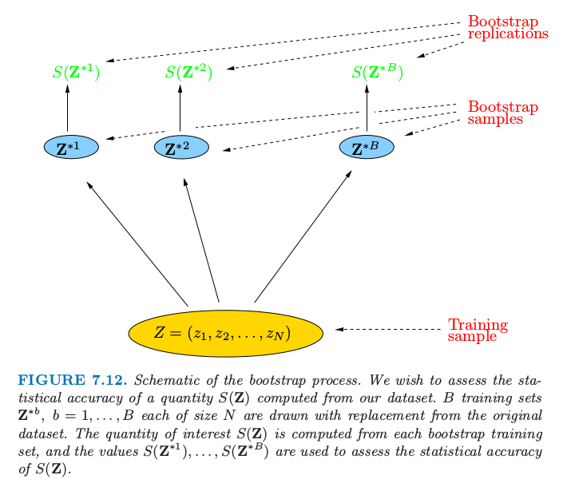

自助法
| 原文 | The Elements of Statistical Learning |
|---|---|
| 翻译 | szcf-weiya |
| 时间 | 2017-02-19:2017-02-19 |
自助法是估计统计精确性的一般工具。首先我们描述一般的自助法，接着介绍它怎么用来估计样本外预测误差。如同交叉验证一样，自助法力求估计条件误差$Err_{\cal T}$，但一般只对期望预测误差Err有良好的估计。
假设我们有一个根据训练数据拟合的模型。我们用$\mathbf Z=(z_1,z_2,\ldots,z_N)$来记训练集，其中$z_i=(x_i,y_i)$。基本思想是从训练集中有放会地随机选取数据集，每个样本的大小与原始数据集相同。做B次（如B=100）选取的操作，得到B个自助训练集，正如图7.12显示的那样。接着我们对每个自助法数据集重新拟合模型，并且检查在$B$个复制集上拟合的行为。

图7.12. 自助法过程的原理图。我们希望评估根据数据集计算的$S(\mathbf Z)$值的统计精确性。B个训练集为$\mathbf Z^{b},b=1,\ldots,B$，每个都是从原始数据集中有放会抽取的样本。我们感兴趣的$S(\mathbf Z)$值从每个自助法训练集中计算得到，而且值$S(\mathbf Z^{1}),\ldots,S(\mathbf Z^{*B})$用来评估$S(\mathbf Z)$的统计精确性。
在图中，$S(\mathbf Z)$是根据数据$\mathbf Z$计算的任意值，例如，在部分输入点的预测值。从自助法采样我们可以估计$S(\mathbf Z)$的分布的任意方面，例如，它的方差， 其中$\bar S^=\sum_b S(\mathbf Z^{b})/B$。注意到$\widehat{Var}[S(\mathbf Z)]$可以认为是从数据$(z_1,z_2,\ldots,z_N)$的经验分布$\hat F$中取样对$S(\mathbf Z)$的方差的蒙特卡洛估计。
我们怎样应用自助法来估计预测误差？一种方式是在自助法样本集合上拟合问题中的模型，然后跟踪它预测原始训练集的好坏。如果$\hat f^{*b}(x_i)$是在$x_i$处根据第$b$个自助法数据集拟合出的模型的预测值，我们的估计为 然而，可以简单地看到一般情形下$\widehat{Err}{boot}$没有给出良好估计。原因在于自助法数据集是作为训练样本，而原始训练集是作为测试样本，而且这两个样本有共同的观测。这种重合会使得过拟合的预测看起来不现实地好，这也是交叉验证明确地使用非重合的数据作为训练和测试样本。考虑对两个类别的分类问题应用1-最近邻分类器的例子，每个类有相同的观测，预测变量和类别标签实际上是独立的。于是真实误差率为0.5。但是对自助法估计$\widehat{Err}{boot}$的贡献会是0，除非观测$i$不出现在自助法样本$b$中。后一种情形中会有正确的期望值0.5。现在 因此$\widehat{Err}_{boot}$的期望为$0.5\times 0.368=0.184$，远远低于正确的误差率0.5。
weiya 注
通过模仿交叉验证，可以得到更好的自助法估计。对于每个观测，我们仅仅跟踪自助法样本中不包含该观测的预测。这个舍一法预测误差的自助法估计由下式定义 这里$C^{-i}$是不包含观测$i$的自助法样本$b$的指标集，而且$\vert C^{-i}\vert$为这些样本的个数。在计算$\widehat{Err}^{(1)}$时，我们要么必须选择充分大的$B$来保证所有的$\vert C^{-i}\vert$都大于0，或者我们可以直接删掉（7.56）式中$\vert C^{-i}\vert=0$的项。
舍一自助法解决了$\widehat{Err}_{boot}$遭受的过拟合问题，但是会有在讨论交叉验证中提到的训练集大小偏差问题。每个自助法样本中不同观测的平均个数大约为$0.632\cdot N$，所以它的偏差会大致表现得和两折交叉验证一样。因此如果学习曲线在样本大小为$N/2$时有相当大的斜率，则舍一自助法作为真实误差的估计会有一个向上的偏差。
weiya 注
“.632估计”是为了减轻偏差而设计的。由下式定义 0.632估计的来源是很复杂的；直观上它将舍一自助的估计向训练误差率靠近，也因此降低了向上的偏差。常值.632与式（7.55）有关。
.632估计在“轻拟合”情形下表现很好，但是在过拟合情形下会变糟。这里是来自Breiman等人（1984）的一个例子。假设我们有两个相同大小的类，目标与类别标签独立，而且我们采用1-最近邻规则。则$\overline{err}=0,\widehat{Err}^{(1)}=0.5$，而且因此$\widehat{Err}^{(.632)}=.632\times 0.5=.316$。然而，真实误差率为0.5。
可以通过考虑过拟合的程度来改善.632估计。首先我们定义$\gamma$为无信息误差率（no-information error rate）：这是如果输入与类别标签独立时的预测规则的误差率。$\gamma$的估计可以通过在所有可能的目标$y_i$和预测$x_{i’}$的组合上应用预测规则得到 举个例子，考虑二叉分类问题：令$\hat p_1$为响应变量$y_i=1$的观测比例，令$\hat q_1$为$\hat f(x_{i’})=1$的观测比例。于是 $\hat q_1=\hat p_1$时采用像1-最近邻的规则，则$\hat \gamma$值为$2\hat p_1(1-\hat p_1)$。（7.59）的多类别推广形式为$\hat \gamma=\sum_\ell \hat p_\ell(1-\hat q_\ell)$.
应用这些，相对过拟合率（relative overfitting rate）定义为 这是一个取值为0到1的量，当不存在过拟合（$\widehat{Err}^{(1)}=\overline{err}$）时等于0，当过拟合等于无信息值$\hat\gamma-\overline{err}$时等于1。最后，我们定义“.632+”如下 系数$w$取值为0.632（若$\hat R=0$）到1（若$\hat R=1$）,所以$\widehat{Err}^{(.632+)}$取值为$\widehat{Err}^{(.632)}$到$\widehat{Err}^{(1)}$。再一次，（7.61）的来源也是很复杂的：大致来讲，它得到舍一自助法和训练误差率之间的权衡，权衡依赖于模型过拟合的程度。对于类别标签与输入独立的1-最近邻问题，$\hat w=\hat R=1$，因此$\widehat{Err}^{(.632+)}=\widehat{Err}^{(1)}$，有正确的期望值0.5。在其它不太过拟合的问题中，$\widehat{Err}^{.632+}$会在$\overline{err}$和$\widehat{Err}^{(1)}$中取值。
例子（继续）

图7.13. 箱线图显示了图7.3的四种情形下相对误差$100\cdot [Err_{\hat \alpha}-min_\alpha Err(\alpha)]/[max_\alpha Err(\alpha)-min_\alpha Err(\alpha)]$的分布。这是使用选择的模型相对于使用最优模型的误差。每个箱线图中有100个训练集。
图7.13显示了图7.7中同样的4个问题应用10折交叉验证和.632+自助法估计的结果。正如图中所示，图7.13显示了$100\cdot [Err_{\hat \alpha}-min_\alpha Err(\alpha)]/[max_\alpha Err(\alpha)-min_\alpha Err(\alpha)]$的箱线图，这是使用选择的模型相对于使用最优模型的误差。每个箱线图表示100个不同的训练集。整体上看两种方式都表现不错，或许和图7.7的AIC一样或者略差点。
我们的结论是，对于这些特定的问题和拟合方法，AIC和交叉验证的最小化，或者自助法都得到相当接近最好的可行模型。注意到模型选择的目的，这些衡量方式可能都有偏差，但是这不会有影响，只要偏差不会改变这些方法的相对表现。举个例子，对所有的衡量方式都加上常数不会改变最终选择的模型。然而，对于许多自适应非线性技巧（比如树），估计参数的有效个数是非常困难的。这使得像AIC之类的方法不可行，而且留下交叉验证和自助法供我们选择。
换个不同的问题：每个方法对测试误差估计得有多好？平均上看，四种情形下AIC准则分别高估了所选模型的预测误差38%,37%,51%，和30%，BIC表现也类似。相反地，交叉验证高估了1%,4%,0%和4%，自助法表现也相同。因此如果需要正确估计测试误差，计算交叉误差或者自助法的衡量的额外工作是值得的。像树之类的其它拟合方法，交叉验证和自助法可以低估真实误差10%。在这些情形下，只有分离的测试集会提供测试误差的无偏估计。